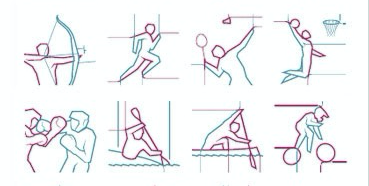

Data Analysis

1.Mart Sales Analysis [EDA,Feature Engineering, Data Preprocessing]
- Big Mart sales analysis for financial years (2013)
- Performed Data Analysis, Feature Engineering and Data Preprocessing
To Analysis

1.Fashion Store Sales Dashboard
- Fashion Store Sales for financial years (2015,2017,2018)
- Filters added [based on States, Based on Category]
- Category like Accessories, Groceries, Kids, Men's, Women's etc..
Solved Leadership Team Requirements:
- Which brand from 2 -- Next Look and Fashion Direct have created more sales?
- How different chains are performing sales wise?
- What Category is producing least and most sales?
- What are Reason wise sales distribution?
- Managers performance based on different State?
- What are overall sales trends based on states putting in consideration all chains?
Tool Used:
MicroSoft Excel
To Fashion Dashboard

2.Sales+Profit Analysis for Leadership Team
Solved Leadership Team Requirements:
Simple yet effective Tableau Dashboard about
- Regional Sales and Profit? [East, West, South, Central regions]
- Segment wise Sales and Profit? [Consumer, Corporate, Home Office]
- Profit obtained by Subcategories? [Machine, Papers, Chairs, Supplies] etc..
Tool Used:
Tableau
To Fashion Dashboard

3.Olympics-Dashboard(1896-2016)
When we see Olympics plethora of Question invade our mind this Webapp takes care of all???
- How well India is doing?
- Which are thouse countries which are performing good overall??
- Which player have most of the Gold, Silver etc...etc...etc..?
Motive is to make a WebApp Dashboard which can show details related with Olympics with accessibility to people having no coding experience. I am convinced to add many other features, under construction and will be updated soon.
I have given four general categories:
- Medal Tally
- Overall Analysis
- CountryWise Analysis
- AthleteWise Analysis
I have also given two filters:
- Selecting Year (1896-2016)
- Selecting County
There are many more other variations to explore them use given link
Tool Used:
Data Analysis - matplotlib, seaborn
Machine Learning - sklearn ...etc
Heroku Olympics Dashboard
Machine Learning
1.Auto Loan-Default Prediction
Financial institutions have seen significant losses due to default of vehicle loans.
This has led to tightening up of vehicle loan underwriting and increased vehicle loan rejection rates.
Need for a better credit risk scoring model is also raised by these institutions.
This warrants a study to estimate determinants of vehicle loan default.
AIM:
- A Financial institution want me to accurately predict probability of loanee/borrower defaulting on a vehicle loan in first EMI on due date
Following Information regarding loan and loanee are provided in data set:
- Loanee Information-(Demographic data like age, Identity proof etc)
- Loan Information-(Disbursal details, loan to value ratio etc)
- Bureau data & History-(Bureau Score, number of active accounts, status of other loans, credit history etc.)
Data Collection:
- Data Source-1 ==> Collected Lonee Information
- Data Source-2 ==> Collected Loan Information
- Data Source-3 ==> Bureau Data and Credit History
Data Features:

Code Link
Deep Learning

First project heading will add soon
Will update details about this project soon
Code
Second project heading will add soon
Will update details about this project soon
Code
Computer Vision

First project heading will add soon
Will update details about this project soon
Code
Second project heading will add soon
Processed astronomical data consisting of 99,000+ images from the Sloan Digital Sky Survey DR-16 and implemented three Convolutional Neural Net architectures to build models to classify galaxies.
Code
Natural Language Processing
Sentiment Analysis
Will share all code, Analysis and how i did this all soon
Code+Demo
Miscellaneous
Youtube Videos
Will update link to my youtube videos for new learner who want to get into Data Science
Code
Kaggle
Will update link to my kaggle kernels which i am writing for new learner who want to get into Data Science
Code
About Me

2+ years of experience in data science and analytics. Worked with service-based startup as well as product-based startup and played a big role in scaleup of data science and analytics team along with the business.
Curiosity, Intellectual agility, Statistical fluency, Research stamina, Scientific rigor and Skeptical nature. I’m an inquisitive learner passionate about leveraging the power of data and financial numbers to extract quintessential insights to solve real-world problems✨✨✨
Resume -- here.
Skills
- Deep Learning [ TensorFlow & Keras ]
- Computer Vision [opencv]
- Machine learning [scikit-learn]
- AWS,AWS Lambda,AWS Sagemaker
- Data Visualisation and Communication
- Tableau,Python,Streamlit,ApacheSpark
Contact
I hold office 9 am - 7 pm IST all days of week. Please leave a mail.
email
mukeshmanral777@gmail.com
Phone
+91 8384801974
Links